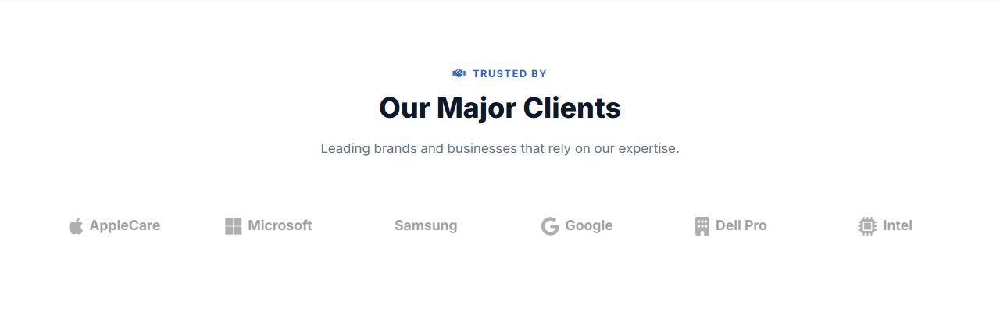
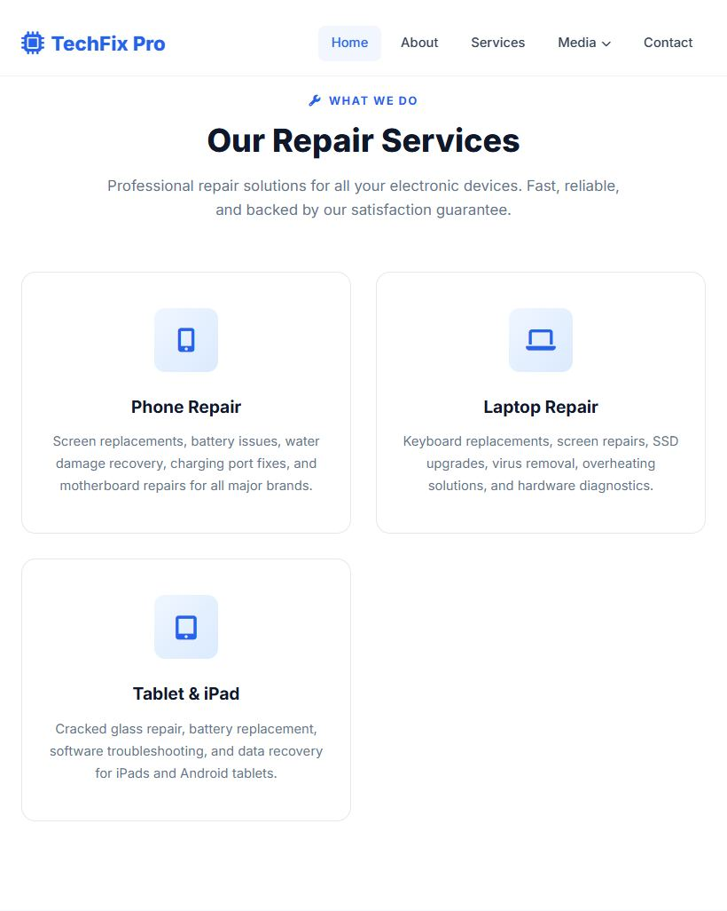

Lesson 13 · Building the Pages
Home Page, Part 4: Testimonials, Clients & Responsive
Finish the Home page with customer reviews and a row of client logos, then add the media queries that make every Home section look great on tablets and phones.
- About 50 minutes
- Edits:
index.html
By the end of this lesson you will be able to
- Put text characters on the page with CSS using
content. - Make round profile pictures.
- Use the
filterproperty to turn colour to greyscale. - Write page-specific media queries, and reorder grid items with
order.
Section 5 — Testimonials
Add the testimonials HTML
Directly above <!-- Footer -->, add:
<!-- Footer --><!-- Testimonials Section -->
<section class="testimonials" id="testimonials">
<div class="container">
<div class="section-header fade-in">
<div class="overline"><i class="fas fa-comments"></i> Testimonials</div>
<h2>What Our Customers Say</h2>
<p>Real feedback from real customers who trusted us with their devices.</p>
</div>
<div class="testimonials-grid">
<div class="testimonial-card fade-in stagger-1">
<div class="stars">
<i class="fas fa-star"></i>
<i class="fas fa-star"></i>
<i class="fas fa-star"></i>
<i class="fas fa-star"></i>
<i class="fas fa-star"></i>
</div>
<p class="testimonial-text">"Fixed my iPhone screen in under 30 minutes! The staff was incredibly professional and the price was way better than the Apple Store. Highly recommend TechFix Pro to anyone."</p>
<div class="testimonial-author">
<img src="https://images.unsplash.com/photo-1494790108377-be9c29b29330?w=100&h=100&fit=crop&crop=face" alt="Sarah Mitchell" loading="lazy">
<div class="author-info">
<h4>Sarah Mitchell</h4>
<span>Marketing Director</span>
</div>
</div>
</div>
<div class="testimonial-card fade-in stagger-2">
<div class="stars">
<i class="fas fa-star"></i>
<i class="fas fa-star"></i>
<i class="fas fa-star"></i>
<i class="fas fa-star"></i>
<i class="fas fa-star"></i>
</div>
<p class="testimonial-text">"My laptop had water damage and I thought it was gone for good. The team at TechFix Pro not only recovered all my data but had it running like new. Absolute lifesavers!"</p>
<div class="testimonial-author">
<img src="https://images.unsplash.com/photo-1507003211169-0a1dd7228f2d?w=100&h=100&fit=crop&crop=face" alt="James Rodriguez" loading="lazy">
<div class="author-info">
<h4>James Rodriguez</h4>
<span>Software Engineer</span>
</div>
</div>
</div>
<div class="testimonial-card fade-in stagger-3">
<div class="stars">
<i class="fas fa-star"></i>
<i class="fas fa-star"></i>
<i class="fas fa-star"></i>
<i class="fas fa-star"></i>
<i class="fas fa-star-half-alt"></i>
</div>
<p class="testimonial-text">"We've been using TechFix Pro for our office equipment for over 2 years. Their business support is outstanding — fast turnaround and excellent communication every time."</p>
<div class="testimonial-author">
<img src="https://images.unsplash.com/photo-1438761681033-6461ffad8d80?w=100&h=100&fit=crop&crop=face" alt="Emily Chen" loading="lazy">
<div class="author-info">
<h4>Emily Chen</h4>
<span>Office Manager, Apex Corp</span>
</div>
</div>
</div>
</div>
</div>
</section>- Five
fa-staricons make a 5-star rating. The third review usesfa-star-half-altfor 4½ stars. - The small profile photos are loaded at 100×100 pixels (
w=100&h=100in the address) because they're shown small. There's no point downloading a huge photo.
Style the testimonials
Add to the <style> block:
<style> block, below the newsletter CSS/* ============================================
Testimonials Section
============================================ */
.testimonials {
padding: 100px 0;
background: var(--light);
}
.testimonials-grid {
display: grid;
grid-template-columns: repeat(3, 1fr);
gap: 1.75rem;
}
.testimonial-card {
background: var(--white);
border-radius: var(--radius-lg);
padding: 2rem;
border: 1px solid var(--border);
transition: var(--transition);
position: relative;
}
.testimonial-card:hover {
transform: translateY(-6px);
box-shadow: var(--shadow-lg);
border-color: transparent;
}
.testimonial-card::before {
content: '"';
position: absolute;
top: 1rem;
right: 1.5rem;
font-size: 4rem;
color: var(--primary);
opacity: 0.1;
font-family: Georgia, serif;
line-height: 1;
}
.stars {
display: flex;
gap: 0.2rem;
margin-bottom: 1rem;
}
.stars i {
color: var(--accent);
font-size: 0.85rem;
}
.testimonial-text {
color: var(--dark-gray);
font-size: 0.95rem;
line-height: 1.75;
margin-bottom: 1.5rem;
font-style: italic;
}
.testimonial-author {
display: flex;
align-items: center;
gap: 0.875rem;
}
.testimonial-author img {
width: 48px;
height: 48px;
border-radius: 50%;
object-fit: cover;
border: 2px solid var(--border);
}
.author-info h4 {
font-size: 0.95rem;
font-weight: 700;
margin-bottom: 0.15rem;
}
.author-info span {
font-size: 0.8rem;
color: var(--gray);
}- The big quote mark:
.testimonial-card::beforehascontent: '"';. It inserts an actual quotation-mark character, sized to 4rem in the Georgia font, at 10% opacity, in the top-right corner. It's pure decoration, so it lives in the CSS, not the HTML. - Round photos: a 48×48px square image with
border-radius: 50%becomes a circle.object-fit: coverkeeps the face from being squashed. font-style: italicslants the review text.
Section 6 — Our Major Clients

Add the clients HTML
Directly above <!-- Footer -->, add:
<!-- Footer --><!-- Major Clients Section -->
<section class="clients">
<div class="container">
<div class="section-header fade-in">
<div class="overline"><i class="fas fa-handshake"></i> Trusted By</div>
<h2>Our Major Clients</h2>
<p>Leading brands and businesses that rely on our expertise.</p>
</div>
<div class="clients-grid fade-in">
<div class="client-logo"><i class="fab fa-apple"></i> AppleCare</div>
<div class="client-logo"><i class="fab fa-microsoft"></i> Microsoft</div>
<div class="client-logo"><i class="fab fa-samsung"></i> Samsung</div>
<div class="client-logo"><i class="fab fa-google"></i> Google</div>
<div class="client-logo"><i class="fas fa-building"></i> Dell Pro</div>
<div class="client-logo"><i class="fas fa-microchip"></i> Intel</div>
</div>
</div>
</section>The logos are Font Awesome brand icons (fab) next to a name. The last two use solid icons (fas), because Font Awesome doesn't have Dell or Intel logos.
Style the clients
Add to the <style> block:
<style> block, below the testimonials CSS/* ============================================
Major Clients Section
============================================ */
.clients {
padding: 80px 0;
background: var(--white);
}
.clients-grid {
display: grid;
grid-template-columns: repeat(6, 1fr);
gap: 2rem;
align-items: center;
justify-items: center;
}
.client-logo {
display: flex;
align-items: center;
justify-content: center;
height: 60px;
filter: grayscale(100%);
opacity: 0.5;
transition: var(--transition);
font-size: 1.1rem;
font-weight: 700;
color: var(--dark-gray);
gap: 0.5rem;
}
.client-logo:hover {
filter: grayscale(0%);
opacity: 1;
transform: scale(1.05);
}
.client-logo i {
font-size: 1.5rem;
color: var(--primary);
}repeat(6, 1fr)puts all six in one row.justify-items: centercentres each logo in its column.filter: grayscale(100%)removes all colour;opacity: 0.5fades it. On hover both are undone and the logo grows slightly (scale(1.05)).
Making the Home page responsive
The shared styles.css already handles the navbar and footer on small screens. Now the Home page's own grids need to adapt too.
Add the Home page media queries
Add this at the very end of the <style> block (just above </style>):
<style> block/* ============================================
Responsive
============================================ */
@media (max-width: 1024px) {
.services-grid,
.news-grid,
.testimonials-grid {
grid-template-columns: repeat(2, 1fr);
}
.clients-grid { grid-template-columns: repeat(3, 1fr); }
}
@media (max-width: 768px) {
.hero-stats { gap: 2rem; margin-top: 3rem; }
.about-grid { grid-template-columns: 1fr; gap: 3rem; }
.about-image { order: -1; }
.about-image img { height: 300px; }
.experience-badge {
left: 16px; bottom: 16px;
padding: 1rem 1.25rem;
}
.experience-badge .years { font-size: 1.75rem; }
.services-grid,
.news-grid,
.testimonials-grid {
grid-template-columns: 1fr;
max-width: 480px;
margin: 0 auto;
}
.clients-grid { grid-template-columns: repeat(2, 1fr); }
.newsletter-form { flex-direction: column; }
.hero-buttons { flex-direction: column; align-items: center; }
.hero-buttons .btn { width: 100%; max-width: 280px; }
}| Screen width | What changes |
|---|---|
| 1024px and below | Services, news and testimonials go from 3 columns to 2. Clients go from 6 to 3. |
| 768px and below | Card grids become 1 column (max 480px wide, centred). The about section stacks, with the photo moved above the text (order: -1). The badge moves inside the photo. The newsletter input and button stack. Hero buttons stack and become full width. |
New term: order
Grid and flex items normally appear in the same order as in the HTML. order changes that visually. Items have order: 0 by default, so order: -1 moves the about image before the text. On a phone, you see the photo first.
Test the whole Home page
Save and view the page at desktop, tablet and phone sizes (DevTools → Ctrl + Shift + M).

Common mistakes
- The media queries don't work: they must be below the normal rules. If they're above, the normal rules (which come later) win.
- The page scrolls sideways on a phone: something is too wide. In DevTools, hover over elements until you find the one that sticks out past the right edge.
Practice
- Add a fourth testimonial. Pick a photo from unsplash.com, or reuse one. How does the grid handle four cards in three columns?
- Change the client logos so they are in colour all the time (hint: remove two declarations).